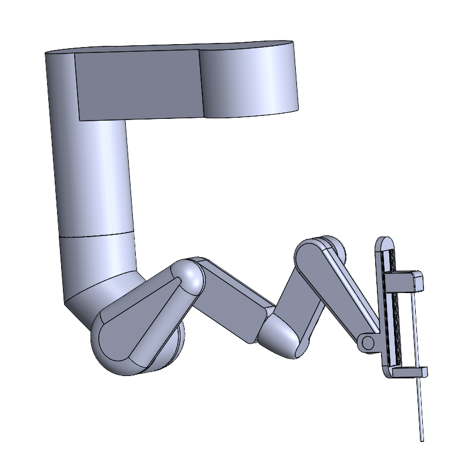

Robotics · SolidWorks
Four-Arm Surgical Robotic System
A four-arm robotic architecture with independently articulated instrument arms, designed to explore improved clearance between neighboring arms.

Overview
I designed a four-arm surgical robotic system inspired by the da Vinci surgical platform. The project focused on mechanical architecture, independently articulated arms, and instrument positioning.
Multi-arm surgical systems need several instruments to operate within a shared workspace. The size and position of neighboring arms can create mechanical interference and restrict available configurations. I explored whether slimmer arm geometry could increase clearance while preserving flexibility for instrument positioning.
Mechanical design
The complete SolidWorks assembly integrates four independently articulated arms, instrument linkages, and the supporting structure.
- Articulated arms: Four arms, each designed with eight joints. I made the links slimmer to reduce their physical envelope and qualitatively improve clearance between neighboring arms.
- Surgical instruments: Instrument linkages and mechanisms designed from scratch, drawing inspiration from the da Vinci instrument architecture and integrated into the arms.
- System structure: An overhead support boom, central structural column, and H-shaped base support the four-arm assembly.

Design approach
The primary design consideration was the spatial relationship between neighboring arms. Reducing the thickness of the arm links let me explore a more compact geometry intended to improve available clearance. I evaluated that improvement qualitatively in CAD; I did not perform numerical interference analysis or physical testing.
I developed the system as a complete SolidWorks assembly, integrating the articulated arms, instrument mechanisms, and supporting structure.
Project scope
This iteration focused on mechanical architecture, component design, and CAD assembly development. The result is a conceptual surgical robotic system. Physical prototyping, quantitative motion validation, and clinical testing were outside the project scope.